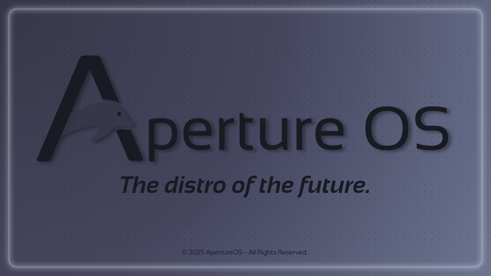

ApertureOS: Fast, Simple, User-friendly Linux distro
ApertureOS is a New Linux-based Distribution established in 2025 with the only goal of providing a wonderful, simple and intuitive user-friendly experience, making it the perfect choice for both newbies and experienced users. ApertureOS provides a set of tools like Blink, a powerful source-based package manager, and Pulse, its own innovative installer, capable of customizing your system in just a few clicks.
Get ApertureOS
About ApertureOS
Founded in 2025 by Elia73333 on All Things Linux ApertureOS is a Linux distribution built for simplicity, speed, and ease of use. It comes with a clean interface, essential tools, and reliable performance, making Linux approachable for users of all skill levels.
At the heart of ApertureOS is Blink, a source-based package manager that allows users to build and manage software directly from source code. Blink gives you full control over how packages are compiled and optimized, making software management flexible, transparent, and tailored to your system. Together, ApertureOS and Blink provide a fast, customizable, and enjoyable Linux experience, whether you're learning Linux, developing software, or just want a system that works smoothly out of the box.
Together, ApertureOS and Blink provide a fast, customizable, and enjoyable Linux experience, whether you're learning Linux, developing software, or just want a system that works smoothly out of the box.
Features
- Performance: Fully optimized ISO and filesystem with minimal bloat, while providing all the tools needed for a smooth and enjoyable user experience.
- Privacy: ApertureOS never collects telemetry or user data — your system, your control.
- Tools: Includes handy tools like Pulse, its own TUI/GUI installer, making it easy to customize your system exactly how you want.
- Community: ApertureOS grows with community feedback. If you find a bug or have suggestions, open an issue on our GitHub.
Contact
We’d love to hear from you! Email us at apertureos.main@outlook.com.
Or join our community servers: